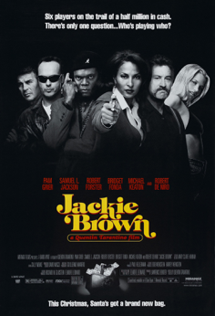
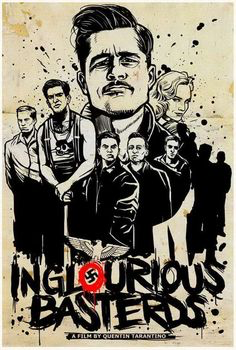
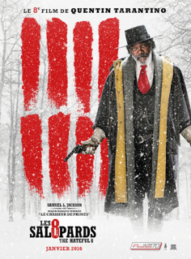

Antoine AYOUB
CEO @YOURWINE
Après une expérience de plus de 5 ans dans le conseil et près de 2 ans dans le développement commercial, j'ai décidé de réorienter mon projet professionnel vers l'entrepreneuriat. Vinify est une strartup qui veut faire bouger le monde du vin.
See my profileMy favorite movies
|  |
Jackie BrownJackie Brown est un film policier américain écrit et réalisé par Quentin Tarantino et sorti en 1997. C'est la première fois que le réalisateur adapte un roman à l'écran, en l'occurrence Punch créole (Rum Punch) d'Elmore Leonard sorti en 1992. Pam Grier a le rôle principal. |
|  |
Inglourious BasterdsFilm de guerre uchronique germano-américain écrit et réalisé par Quentin Tarantino, sorti en 2009. L'histoire se déroule en France durant la Seconde Guerre mondiale et narre la vengeance d'une jeune Juive, Shosanna Dreyfus (Mélanie Laurent), dont la famille a été assassinée par les nazis. |
|  |
Les Huit SalopardsQuelques années après la Guerre de Sécession, le chasseur de primes John Ruth, dit Le Bourreau, fait route vers Red Rock, où il conduit sa prisonnière Daisy Domergue se faire pendre. Sur leur route, ils rencontrent le Major Marquis Warren, un ancien soldat lui aussi devenu chasseur de primes, et Chris Mannix, le nouveau shérif de Red Rock. |